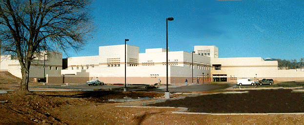

THE NEW MEXICO STATE LIBRARY |
|
 |
||
|
1209 Camino Carlos Rey |
||
The New Mexico State Library , a part of the executive branch of state government, is a division of the Office of Cultural Affairs (OCA). The Library was established in 1929 to "promote an effective statewide library system."
The State Library's mission is to insure that all New Mexicans have the information they need when they need it. The State Library supports the Library Bill of Rights and the Interpretation of Electronic Access
We are open to the public from 9:00 a..m. to 5:00 p.m. Monday through
Friday.
Staff is available from 8:00 to 5:00
The Library is divided into service bureaus.
| Catalog | Hitchhiker | Home | Programs & Information |